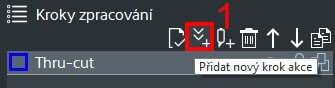
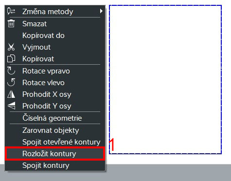

Kamera má někdy problém najít okraj pásu, pokud klikneme pravým tlačítkem myši na záznam kamery dostaneme se do nastavení, kde můžeme upravovat kontrast, expozici a pod.
Při řezání děr do tlustých a pevných materiálů vzniká riziko zlomení nože. Tento problém jednoduše řeší metoda score, která umožňuje do pásu zajet pouze částečně.
1 V CutEditoru klikneme na "Přidat nový krok zpracování"
2 Vybereme metodu score
3 Znovu klikneme na "Přidat nový krok zpracování" a vytvoříme také metodu thru-cut
Ujistěte se, že metoda score je nad metodou thru-cut:
4 Rozklikneme nastavení metody score
5 Nastavíme hloubku nařezávání na 50%
6 Označíme objekt a pomocí CTRL+C/CTRL+V vytvoříme jeho kopii
7 K jedné kopii přiřadíme metodu score a ke druhé metodu thru-cut
8 Následně kopii označíme a překryjeme s ní originál, takže budou dva objekty na sobě
9 Jako poslední krok musíme nastavit finální prořez v metodě thru-cut (to už záleží řezaném materiálu)
Finální výsledek bude vypadat tak, že nůž vytvoří nejdřív řez do poloviny tloušťky materiálu a druhý řez ho teprve kompletně prořízne. Nůž není pod takovým nátlakem a nehrozí jeho zalomení.
CutEditor zobrazuje díry děrovákem jako tečky. Jelikož toto CNC nedisponuje děrováky 6 a více je chytré naučit se změnit díry děrovákem na díry nožem.
1 V CutEditoru najdeme díru, která se zobrazuje jako tečka a označíme ji
2 Klikneme pravým tlačítkem myši a vybereme možnost "Číselná geometrie"
3 Zapíšeme si někam absolutní pozici tečky v tomto připádě X30 a Y30
4 Vytvoříme kruh
5 Kruh označíme a vrátíme se do číselné geometrie
6 Nastavíme pozici na střed
7 Kruhu nastavíme zapsanou absolutní pozici X a Y (pozici tečky, v tomto případě 30 a 30)
8 Kruhu nastavíme velikost X a velikost Y (na obrázku vytváření díry velikosti 10)
9 Tečku v neposlední řadě označíme a vymažeme protože ji už nepotřebujeme
Finální výsledek bude vypadat tak, že kruh bude ve středu tečky. Tzn. vytvoří díru na pozici kde má být.
1 Vybereme možnost Nástroje > Přesun počátečního bodu
2 Myší klikneme na místo kde chceme aby řez započal
1 Pravým tlačítkem myši klikneme na pracovní prostor a vybereme možnost "Parkovací pozice"
2 Vybereme pozici pro zaparkování (pozice 0/0 je pozice u stolu)
1 Klikneme na ikonu "Přidat nový krok akce"
2 Vybereme akci "Pauza"
3 Pauzu zařadíme kam potřebujeme pomoci šipek
Tento problém často nastává, když má role požadovanou šíři ale program je vytvořen tak, že se počítá i s říznutím šíře. Nůž by tedy zbytečně řezal kolem šíře pásu.
1 Obdelník označíme zmáčkneme pravé tlačítko myši a vybereme možnost "Rozložit kontury"
2 Nyní stačí pouze označit čáry, které nepotřebujeme a tlačítkem delete je vymazat
3 Všechny kontury lze zobrazit pomocí tlačítka "Zobrazit otevřené kontury"
1 Jednu díru označíme
2 Zmáčkneme mezerník
3 Pomoci CTRL+C a CTRL+V vytvoříme kopii díry
4 Kopii díry poté posuneme mimo objekt pomoci šipek na klávesnici
5 Kopii díry označíme a vytvoříme pro ni novou metodu
6 Metodu pojmenujeme například "díratest"
7 Celý objekt skryjeme pomoci tlačítka "skrýt" v tomto případě metoda thru-cut: tool1
8 Nyní by měla být vidět na pracovní ploše pouze naše testovací díra
9 Díru označíme a tlačítkem Home na klávesnici jí pošleme na pozici 0/0
10 Poté co skončíme s testováním stačí metodu testdira pouze skrýt a hlavní objekt naopak odkrýt
Pokud vám posuv vychází do místa, kde bude například díra nebo prst je potřebné umět změnit pozici posuvu
1 Klikneme na ikonu "Upravit délku posuvu"
2 Myší najedeme na červenou přerušovanou čáru označující posuv a přetáhneme ji tam, kam zrovna potřebujeme

Při určitém směru řezu vzniká větší šance, že nůž pás nadzvedne a potáhne ho mimo řezací bod. Naštěstí lze velice jednoduše ovlivnut to jakým směrem bude nůž řezat
1 Klikneme na ikonu "Obrátit směr"
2 Myší klikneme na čáru u které chceme nastavit směr řezu
3 Zobrazí se růžové šipky, které nazančují jakým směrem nůž pojede, pokud klikneme znovu na čáru směr obrátíme
Při určitém směru řezu vzniká větší šance, že nůž pás nadzvedne a potáhne ho mimo řezací bod. Naštěstí lze velice jednoduše ovlivnut to jakým směrem bude nůž řezat
1 Klikneme na ikonu "Obrátit směr"
2 Myší klikneme na čáru u které chceme nastavit směr řezu
3 Zobrazí se růžové šipky, které nazančují jakým směrem nůž pojede, pokud klikneme znovu na čáru směr obrátíme
Při určitém směru řezu vzniká větší šance, že nůž pás nadzvedne a potáhne ho mimo řezací bod. Naštěstí lze velice jednoduše ovlivnut to jakým směrem bude nůž řezat
1 Klikneme na ikonu "Obrátit směr"
2 Myší klikneme na čáru u které chceme nastavit směr řezu
3 Zobrazí se růžové šipky, které nazančují jakým směrem nůž pojede, pokud klikneme znovu na čáru směr obrátíme
Při určitém směru řezu vzniká větší šance, že nůž pás nadzvedne a potáhne ho mimo řezací bod. Naštěstí lze velice jednoduše ovlivnut to jakým směrem bude nůž řezat
1 Klikneme na ikonu "Obrátit směr"
2 Myší klikneme na čáru u které chceme nastavit směr řezu
3 Zobrazí se růžové šipky, které nazančují jakým směrem nůž pojede, pokud klikneme znovu na čáru směr obrátíme